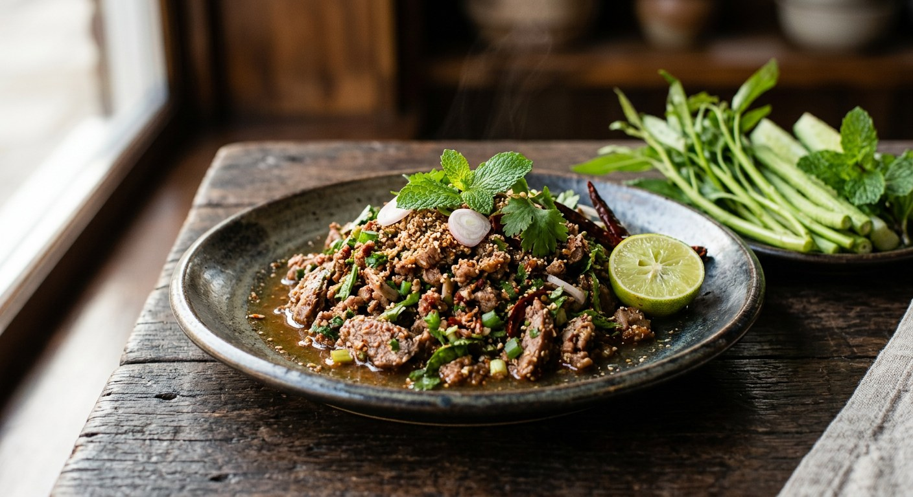

Duck and its offal, chopped coarsely and dressed warm with toasted spices, lime and fish sauce, then crowned with duck crackling — the north's richest laab, eaten with sticky rice and a fistful of herbs.

ลาบ (laab) is the north's great shared dish — chopped meat dressed in spices and herbs — and เป็ด (ped), duck, is its richest version. Where pork laab leans on blood and raw freshness, duck laab is cooked, warm, and built on duck's own fat. The skin is never discarded: it is sliced thin and fried to crackling (หนังเป็ดเจียว), and the Afmtrk recipe calls that crackling the whole secret — "ลาบเป็ดทั่วไปจะไม่มีหนังเป็ดเจียว" — ordinary laab ped has no crackling, and the crackling is what lifts this one.
The spices are the dish's second pillar. Sanook's recipe toasts dried chillies, shallots and garlic over a flame and pounds them into a coarse เครื่องลาบ, then adds a roasted rice that is not plain — sticky rice roasted together with lemongrass, kaffir lime leaves and galangal before pounding, so the toastiness carries herbs with it. The northern pantry goes further: พริกลาบ, the north's own laab spice mix, built on มะแขว่น (makhwaen, a numbing Sichuan-pepper relative), long pepper, fennel seed and wild ginger, all toasted. Ikasalong's northern laab recipe is blunt about how central it is: no makhwaen, no laab.
Duck is a big animal to be chopping fine, and every source treats the texture as the point. Chef Phon's traditional version chops a whole fresh duck with a heavy cleaver — บังตอ — and kneads the meat with lime juice, sea salt and a wild olive to pull out the gamey note before it ever meets the pan. Aroifin does the same for the offal: liver, gizzard and intestine blanched with lemongrass and galangal, then stirred through the fat-rich meat. The result is a warm, sour, faintly numbing salad that tastes of the duck itself — not of chilli heat papering over it.
| Thai | English | Amount |
|---|---|---|
| เป็ด | Duck meat with skin (fresh, muscovy if you can) | 500 g |
| เครื่องลาบ / พริกลาบเหนือ | Toasted laab spice mix (or northern phrik laap) | 2 tbsp |
| ข้าวคั่ว | Roasted rice powder | 2–3 tbsp |
| น้ำปลา | Fish sauce | 2 tbsp |
| น้ำมะนาว | Lime juice | 2–3 tbsp |
| หอมแดง | Shallots, thinly sliced | 4–5 |
| ต้นหอม | Spring onions, chopped | 2 |
| ผักชีฝรั่ง | Sawtooth coriander, chopped | 1 handful |
| ใบมะกรูด | Kaffir lime leaves, very finely shredded | 2–3 |
| ใบสะระแหน่ | Mint leaves | 1 handful |
| เครื่องในเป็ด | Duck offal — liver, gizzard, intestines (optional) | 150 g |
| ตะไคร้ / ข่า | Lemongrass / galangal, for blanching the offal | – |
| น้ำมันพืช | Vegetable oil, for frying | – |
The herbal rice (Sanook): dry-roast sticky rice together with sliced lemongrass, kaffir lime leaves and galangal until golden, then pound fine — the rice carries the herbs into every bite. Afmtrk's addition: white sesame, roasted and pounded in at 1 part sesame to 4 parts rice. The chef's duck (Phon Food Mafia): a whole fresh duck, chopped with a cleaver and kneaded with lime, sea salt and a wild olive before cooking; the bones simmered with lemongrass, galangal, kaffir lime and fish sauce into a ten-minute stock used to moisten the laab. The roast-duck shortcut (Cookpad): 300 g of shop roast duck, marinated in northern laab powder and fried crisp in the same oil that browned the garlic, shallots and dried chillies.
Fresh or roast duck. Chef Phon is explicit: the traditional laab ped uses fresh duck, chopped raw and cooked in the pan. Cookpad's home version starts from shop roast duck and fries it crisp — the author calls it a "two-region" laab. Fresh gives you the stock, the fat and the crackling; roast duck is a twenty-minute shortcut.
The acid. Lime juice, everywhere — except Chef Phon, who kneads the meat with lime, sea salt and a wild olive (มะกอกป่า), squeezes the juices out, and builds the broth on them. The olive's tartness is gentler than lime and leaves no citrus edge on the duck. The recipe used here follows the lime majority, with the olive massage noted as an option.
The spice mix. Sanook chars chillies, shallots and garlic and pounds them — the Isaan-style laab spice. The northern sources (Ikasalong's laab nua method, Aroifin's northern laab) insist on พริกลาบ: toasted makhwaen, long pepper, fennel seed, wild ginger — toasted, not charred. Cookpad splits the difference with a spoon of each ready-made powder. Same dish, three spice benches.
The roasted rice. Plain roasted sticky rice (Phon, Aroifin, Cookpad) versus herbal rice — sticky rice roasted with lemongrass, kaffir lime and galangal (Sanook) — versus Afmtrk's rice cut with roasted white sesame, four to one. All agree the rice must be toasted and pounded fine; they disagree on what toasts with it.
The offal. Aroifin builds the laab around it — intestine, liver and gizzard stirred through the meat, which is where the "rich, no gaminess" comes from. Chef Phon's restaurant version is clean leg meat only. Sanook skips it. If you love duck liver, in it goes; if you want the pure thing, leave it out — both are recognisably laab ped.
Blood. The northern pork laab that frames this dish is famous for blood — chopped into the meat, turning the laab dark and silky. None of the duck recipes use duck blood; duck laab is the cooked, bloodless cousin. (And the northern sources themselves now warn that raw laab carries risk — they advise the cooked ลาบคั่ว.)
This recipe is translated from the following Thai-language sources. Where they disagree, we've said so.
1. Sanook — "วิธีทำ ลาบเป็ด อาหารอีสานรสเด็ด สูตรแซ่บนัวด้วยข้าวคั่วสมุนไพร" (the recipe used here; the herbal roasted rice and fried aromatics) — sanook.com
2. Phol Food Mafia — "Larb Ped (ลาบเป็ด)" by Phon Tantasathien (the traditional fresh-duck version; wild olive, cleaver-chopping, bone stock) — pholfoodmafia.com
3. Aroifin — "วิธีทำ ลาบเป็ด เนื้อนุ่มติดมัน ไร้กลิ่นคาว แซ่บนัวสุด ๆ" (the offal version; de-gaming tips, duck selection) — aroifin.com
4. Afmtrk — "ลาบเป็ด สูตรความอร่อยจากภาคอีสาน" (the duck crackling secret; sesame roasted rice; muscovy duck tips) — afmtrk.com
5. Ikasalong — "วิธีทำลาบเหนือ พร้อมสูตรพริกลาบ" and Aroifin — "ลาบเหนือ ลาบคั่ว" (the northern method: raw or kua, and the phrik laap of makhwaen, long pepper, fennel and wild ginger) — ikasalong.com, aroifin.com
6. Cookpad — "ลาบคั่วเป็ดย่าง 2 ภาค" by Thaiphat P. (the roast-duck two-region shortcut; phak phaeo) — cookpad.com